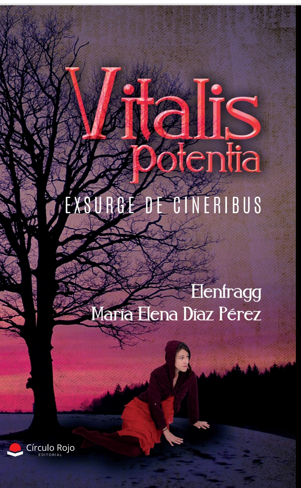
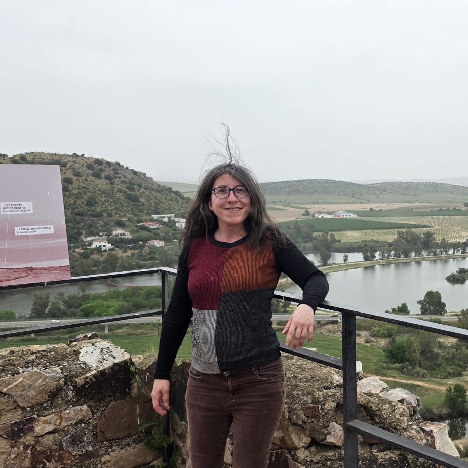

Historias poéticas escritas desde dentro: la oscuridad, la adversidad y lo que queda en pie después.
Es un poemario vivido en primera persona, sobre problemas socialmente actuales, que son la consecuencia de haber crecido en la generación de los 70 a los 90, cuando sentir emociones o mostrarlas estaba mal visto socialmente, como si fueran debilidad y no merecieran nada.
Historias poéticas a través de la oscuridad, la adversidad y la resiliencia, usando simbología, introspección y mitología.
Exsurge de cineribus: resurge de las cenizas.
¿Quieres tu ejemplar firmado por la autora? Escríbele por Instagram y lo hablas directamente con ella.
Ver sus redesY una manera de contarlo: simbología, introspección y mitología. Los dioses oscuros que aparecen en los poemas no son adorno; son la forma que toma el daño cuando viene de fuera.
La autora deja leer uno completo. Si te llega, el resto está en el libro.
Cuestiones incesantes resuenan,
un laberinto de abandono surge,
la cárcel de la amargura perversa,
en un sendero angosto y cruel.
Senderos que vuelven al origen,
en una ilusión tan reconstruida,
más se protege de inclemencias,
de sí mismo y sobre los peligros.
Su entorno, tan hostil, lo atrapa,
girando sobre sí mismo en un eje,
eternamente, sin final alguno,
esperando a ser rescatado…
Su entorno quiso prenderle fuego,
dejándolo acabarse, en soledad,
abandonó el quererse y el amarse,
lo dejaron vació, sin energía alguna.
Incansables batallas internas yacían,
repentinas guerras fueron feroces,
rompiendo el alma tan pura y bella,
no tuvieron piedad, ni compasión.
Como si no les importara nada,
como si mereciera todo el mal,
como si su pureza valiera de algo,
como si fuera un trapo desgastado.
Se perdió en la soledad absoluta,
sin rumbo u objetivo a seguir,
sin motivos para volver a caminar,
se convirtió en piedra, sin amor.
Inmovilizado, con miedo y terror,
se enfrentó y empezó a arrasar,
estremeciendo su ser interior,
destruyendo su esencia vital.
Recibió flechas, fue golpeado,
llovió un fuego incesante externo
de manera infernal, sin piedad,
de los dioses oscuros, crueles.
Dioses implacables, sin alma,
drenando su energía más pura,
matándolo lento y en agonía,
retorciéndole de muerte y dolor.

EMaría Elena Díaz Pérez es escritora, creadora de contenido y profesional de la venta al por menor. Nació el 27 de noviembre de 1984 en Zaragoza y vive en Mérida (Badajoz). Compagina su trabajo como dependienta con una profunda vocación literaria, el amor por la naturaleza y su pasión por bailar rock and roll.
Desde niña tuvo una curiosidad innata y una gran pasión por los libros de ciencia —con especial interés en la astrología y la medicina—, además de la filosofía y la poesía. En la adolescencia encontró en la escritura poética una vía esencial de desahogo emocional, y ahí nacieron sus primeros poemas, de corte romántico y filosófico. Con los años, a base de prueba y error, fue puliendo su técnica lírica hasta una madurez marcada por la introspección y la profundidad.
Su juventud estuvo muy ligada al entorno digital: desde la adolescencia hasta los 28 años gestionó la web de un club de fans de un grupo musical creado en su Zaragoza natal, moderó comunidades de política y videojuegos en Facebook, colaboró en la gestión de una empresa de juego online y escribió para varios blogs.
La culminación de esa evolución poética es su primer poemario, Vitalis Potentia: Exsurge de Cineribus, un libro con un propósito social y humano muy claro: ayudar a las personas, darles voz y animarlas a expresar su dolor ante las situaciones más adversas. Con sus versos busca romper las barreras del condicionamiento social y de los entornos desfavorables, esos que hacen que mostrar la vulnerabilidad dé miedo o provoque rechazo.
Ahora sigue ampliando su horizonte literario y prepara el lanzamiento de su segundo libro, un proyecto poético escrito en colaboración con otro autor.
Vitalis potentia: Exsurge de cineribus está publicado por Editorial Círculo Rojo y a la venta en Amazon.
El poemario completo. De los que se leen despacio y se vuelven a abrir por cualquier página.
Ir a Amazon Editorial Círculo RojoSi lo quieres dedicado, escríbele a ella por Instagram y lo arregláis directamente.
Escribir a la autora Ejemplar dedicadoSi aún lo estás pensando, sube y lee «Laberinto» completo. Es una muestra honesta de lo que hay dentro.
Leer «Laberinto» Muestra gratuitaElena comparte por aquí sus versos y lo que está preparando, incluido ese segundo poemario a cuatro manos. Si quieres el libro dedicado, este es el sitio para pedírselo.